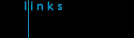

|
|  |
 |
Links to RASC and Other Astronomy Pages |
Miscellaneous Web Sites
- Starlink visibility
- Indiana University Astronomy Department (They have an Automatic Photometric Telescope going there.)
- Jason Ware's home page (Astrophotographs).
- SETI Institute
- Universe Today: Updated daily with space exploration and astronomy news.
- SkyWatch - Your Astronomical Alarm Clock
Questions about astronomy, the Saskatoon Centre or membership?
E-mail: sk_centre@rasc.ca
RASC Inc.
PO Box 31086, RPO Broadway
Saskatoon, SK S7H 5S8